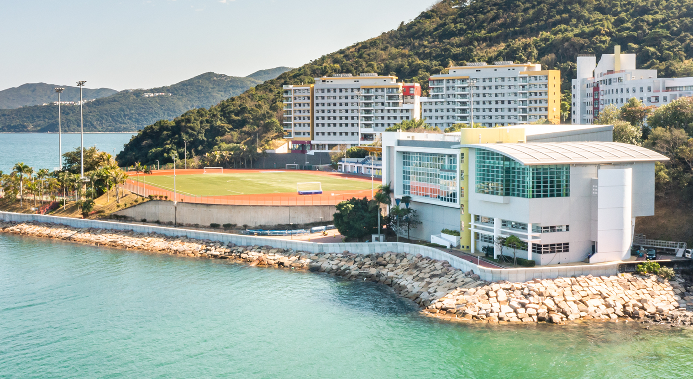

ABOUT CMI
Curiosity connects us.
Passion drives us.
AI, robotics and marine science. Shared ideas for a living ocean.
Our mission
Bring intelligent technology and ecological knowledge together to understand, monitor and care for marine environments.
We bring together researchers across HKUST to advance ocean observation, autonomous exploration, biodiversity understanding and conservation.
Our vision
A future in which marine intelligence deepens our understanding of the ocean and helps sustain healthy, resilient marine ecosystems.
From shared ideas to the shoreline.
Our coastal living laboratory connects shared data, intelligent systems and ecological knowledge with real marine environments.
This work draws on the complementary strengths of HKUST’s research institutes in robotics, artificial intelligence and environmental science.
Image credits
Reef photograph: q phia / Wikimedia Commons, CC BY 2.0. Original photograph, Fiji; displayed with responsive cropping. Campus photograph: HKUST. Faculty portraits: HKUST Faculty Profiles.
.jpg){kind=link}
Research figures: HKUST Von Neumann Institute — AI for Marine Science and Sustainability. Overview cards show selected panels; research pages preserve the complete figures. MarineInst includes labeled image-synthesis outputs.


CONTACT
Let’s make waves.
Have a research question, a collaboration idea or a passion for the ocean? We’d love to connect.
RESEARCH & COLLABORATION
Prof. Sai-Kit Yeung
Founding Director
Center for Marine Intelligence

LOCATION
At the water’s edge.
Ocean Research Facility (OCRF)
The Hong Kong University of Science and Technology
Clear Water Bay, Kowloon
Hong Kong